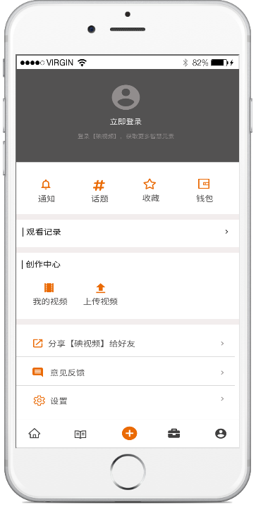

# Introduction
Diantv is an app-based course-sharing platform that gathers workers to stay connected and informed, advance their careers, and work smarter. Diantv brings together a wide range of high-quality courses in various industries, allowing users to gain knowledge in a digestible format anytime and anywhere. Users also can create courses and deliver professional content.
# My Role
Designed the first iteration of the ‘Me’ section of the Diantv app;
Worked alongside a UI designer, marketing strategist, product manager, and the engineering team.Â
Worked alongside a UI designer, marketing strategist, product manager, and the engineering team.Â
